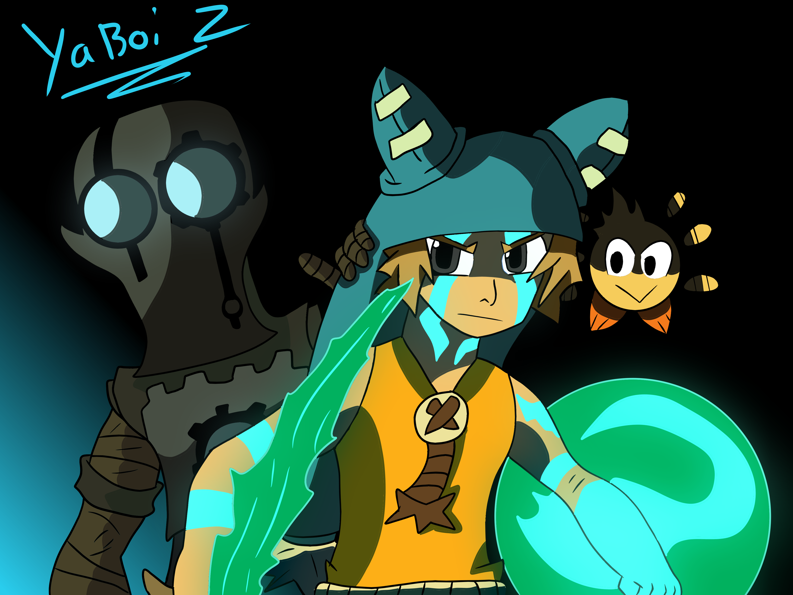

Here is some fan art I made for the show Wakfu. Wakfu: The Animated Series is an anime-influenced French animated television series produced by Ankama Animation, based on the video game Dofus.
My Instagram is: Follow me on Instagram
If you want to follow me, all of my art work is there.
